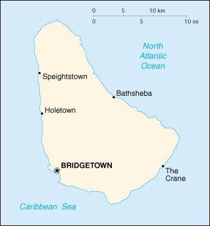

|
Barbados | |
| Introduction Geography People Government Economy Communications Transportation Military Transnational Issues | ||
|  | ||
| Barbados | Introduction | Top of Page |
| Background: | The island was uninhabited when first settled by the British in 1627. Its economy remained heavily dependent on sugar, rum, and molasses production through most of the 20th century. In the 1990s, tourism and manufacturing surpassed the sugar industry in economic importance. |
| Barbados | Geography | Top of Page |
| Location: | Caribbean, island between the Caribbean Sea and the North Atlantic Ocean, northeast of Venezuela |
| Geographic coordinates: | 13 10 N, 59 32 W |
| Map references: | Central America and the Caribbean |
| Area: |
total:
430 sq km
land: 430 sq km water: 0 sq km |
| Area - comparative: | 2.5 times the size of Washington, DC |
| Land boundaries: | 0 km |
| Coastline: | 97 km |
| Maritime claims: |
exclusive economic zone:
200 NM
territorial sea: 12 NM |
| Climate: | tropical; rainy season (June to October) |
| Terrain: | relatively flat; rises gently to central highland region |
| Elevation extremes: |
lowest point:
Atlantic Ocean 0 m
highest point: Mount Hillaby 336 m |
| Natural resources: | petroleum, fish, natural gas |
| Land use: |
arable land:
37%
permanent crops: 0% permanent pastures: 5% forests and woodland: 12% other: 46% (1993 est.) |
| Irrigated land: | NA sq km |
| Natural hazards: | infrequent hurricanes; periodic landslides |
| Environment - current issues: | pollution of coastal waters from waste disposal by ships; soil erosion; illegal solid waste disposal threatens contamination of aquifers |
| Environment - international agreements: |
party to:
Climate Change, Climate Change-Kyoto Protocol, Desertification, Endangered Species, Hazardous Wastes, Law of the Sea, Marine Dumping, Ozone Layer Protection, Ship Pollution
signed, but not ratified: Biodiversity |
| Geography - note: | easternmost Caribbean island |
| Barbados | People | Top of Page |
| Population: | 275,330 (July 2001 est.) |
| Age structure: |
0-14 years:
21.68% (male 30,122; female 29,572)
15-64 years: 69.44% (male 93,283; female 97,915) 65 years and over: 8.88% (male 9,432; female 15,006) (2001 est.) |
| Population growth rate: | 0.46% (2001 est.) |
| Birth rate: | 13.47 births/1,000 population (2001 est.) |
| Death rate: | 8.53 deaths/1,000 population (2001 est.) |
| Net migration rate: | -0.32 migrant(s)/1,000 population (2001 est.) |
| Sex ratio: |
at birth:
1.01 male(s)/female
under 15 years: 1.02 male(s)/female 15-64 years: 0.95 male(s)/female 65 years and over: 0.63 male(s)/female total population: 0.93 male(s)/female (2001 est.) |
| Infant mortality rate: | 12.04 deaths/1,000 live births (2001 est.) |
| Life expectancy at birth: |
total population:
73.25 years
male: 70.66 years female: 75.86 years (2001 est.) |
| Total fertility rate: | 1.64 children born/woman (2001 est.) |
| HIV/AIDS - adult prevalence rate: | 1.17% (1999 est.) |
| HIV/AIDS - people living with HIV/AIDS: | 1,800 (1999 est.) |
| HIV/AIDS - deaths: | 130 (1999 est.) |
| Nationality: |
noun:
Barbadian(s) or Bajan (colloquial)
adjective: Barbadian or Bajan (colloquial) |
| Ethnic groups: | black 80%, white 4%, other 16% |
| Religions: | Protestant 67% (Anglican 40%, Pentecostal 8%, Methodist 7%, other 12%), Roman Catholic 4%, none 17%, other 12% |
| Languages: | English |
| Literacy: |
definition:
age 15 and over has ever attended school
total population: 97.4% male: 98% female: 96.8% (1995 est.) |
| Barbados | Government | Top of Page |
| Country name: |
conventional long form:
none
conventional short form: Barbados |
| Government type: | parliamentary democracy; independent sovereign state within the Commonwealth |
| Capital: | Bridgetown |
| Administrative divisions: | 11 parishes; Christ Church, Saint Andrew, Saint George, Saint James, Saint John, Saint Joseph, Saint Lucy, Saint Michael, Saint Peter, Saint Philip, Saint Thomas; note - the city of Bridgetown may be given parish status |
| Independence: | 30 November 1966 (from UK) |
| National holiday: | Independence Day, 30 November (1966) |
| Constitution: | 30 November 1966 |
| Legal system: | English common law; no judicial review of legislative acts |
| Suffrage: | 18 years of age; universal |
| Executive branch: |
chief of state:
Queen ELIZABETH II (since 6 February 1952), represented by Governor General Sir Clifford Straughn HUSBANDS (since 1 June 1996)
head of government: Prime Minister Owen Seymour ARTHUR (since 6 September 1994); Deputy Prime Minister Billie MILLER (since 6 September 1994) cabinet: Cabinet appointed by the governor general on the advice of the prime minister elections: none; the monarch is hereditary; governor general appointed by the monarch; prime minister appointed by the governor general |
| Legislative branch: |
bicameral Parliament consists of the Senate (21-member body appointed by the governor general) and the House of Assembly (28 seats; members are elected by direct popular vote to serve five-year terms)
elections: House of Assembly - last held 20 January 1999 (next to be held by January 2004) election results: House of Assembly - percent of vote by party - NA%; seats by party - BLP 26, DLP 2 |
| Judicial branch: | Supreme Court of Judicature (judges are appointed by the Service Commissions for the Judicial and Legal Services) |
| Political parties and leaders: | Barbados Labor Party or BLP [Owen ARTHUR]; Democratic Labor Party or DLP [David THOMPSON]; National Democratic Party or NDP [Richard HAYNES] |
| Political pressure groups and leaders: | Barbados Workers Union [Leroy TROTMAN]; Clement Payne Labor Union [David COMMISSIONG]; People's Progressive Movement [Eric SEALY]; Worker's Party of Barbados [Dr. George BELLE] |
| International organization participation: | ACP, C, Caricom, CCC, CDB, ECLAC, FAO, G-77, IADB, IBRD, ICAO, ICFTU, ICRM, IFAD, IFC, IFRCS, ILO, IMF, IMO, Intelsat, Interpol, IOC, ISO, ITU, LAES, NAM, OAS, OPANAL, UN, UNCTAD, UNESCO, UNIDO, UPU, WFTU, WHO, WIPO, WMO, WTrO |
| Diplomatic representation in the US: |
chief of mission:
Ambassador Michael KING
chancery: 2144 Wyoming Avenue NW, Washington, DC 20008 telephone: [1] (202) 939-9200 FAX: [1] (202) 332-7467 consulate(s) general: Miami and New York consulate(s): Los Angeles |
| Diplomatic representation from the US: |
chief of mission:
Ambassador James A. DALEY
embassy: Canadian Imperial Bank of Commerce Building, Broad Street, Bridgetown mailing address: P. O. Box 302, Bridgetown; FPO AA 34055 telephone: [1] (246) 436-4950 FAX: [1] (246) 429-5246 |
| Flag description: | three equal vertical bands of blue (hoist side), gold, and blue with the head of a black trident centered on the gold band; the trident head represents independence and a break with the past (the colonial coat of arms contained a complete trident) |
| Barbados | Economy | Top of Page |
| Economy - overview: | Historically, the Barbadian economy had been dependent on sugarcane cultivation and related activities, but production in recent years has diversified into manufacturing and tourism. The start of the Port Charles Marina project in Speightstown helped the tourism industry continue to expand in 1996-2000. Offshore finance and information services are important foreign exchange earners, and there is also a light manufacturing sector. The government continues its efforts to reduce unemployment, encourage direct foreign investment, and privatize remaining state-owned enterprises. Growth should remain steady in 2001, with new tourist facilities a plus factor. |
| GDP: | purchasing power parity - $4 billion (2000 est.) |
| GDP - real growth rate: | 2.8% (2000 est.) |
| GDP - per capita: | purchasing power parity - $14,500 (2000 est.) |
| GDP - composition by sector: |
agriculture:
4%
industry: 16% services: 80% (1998) |
| Population below poverty line: | NA% |
| Household income or consumption by percentage share: |
lowest 10%:
NA%
highest 10%: NA% |
| Inflation rate (consumer prices): | 2% (2000 est.) |
| Labor force: | 136,000 (1998 est.) |
| Labor force - by occupation: | services 75%, industry 15%, agriculture 10% (1996 est.) |
| Unemployment rate: | 11% (1999 est.) |
| Budget: |
revenues:
$725.5 million
expenditures: $750.6 million, including capital expenditures of $126.3 million (FY97/98 est.) |
| Industries: | tourism, sugar, light manufacturing, component assembly for export |
| Industrial production growth rate: | 0.8% (1996) |
| Electricity - production: | 718 million kWh (1999) |
| Electricity - production by source: |
fossil fuel:
100%
hydro: 0% nuclear: 0% other: 0% (1999) |
| Electricity - consumption: | 667.7 million kWh (1999) |
| Electricity - exports: | 0 kWh (1999) |
| Electricity - imports: | 0 kWh (1999) |
| Agriculture - products: | sugarcane, vegetables, cotton |
| Exports: | $260 million (2000 est.) |
| Exports - commodities: | sugar and molasses, rum, other foods and beverages, chemicals, electrical components, clothing |
| Exports - partners: | UK 14.8%, US 11.6%, Trinidad and Tobago 7.6%, Venezuela 6.1%, Jamaica 5.8% (1998) |
| Imports: | $800.3 million (2000 est.) |
| Imports - commodities: | consumer goods, machinery, foodstuffs, construction materials, chemicals, fuel, electrical components |
| Imports - partners: | US 30.7%, Trinidad and Tobago 10.2%, Japan 8.3%, UK 7.7%, Canada 2.2% (1998) |
| Debt - external: | $425 million (2000 est.) |
| Economic aid - recipient: | $9.1 million (1995) |
| Currency: | Barbadian dollar (BBD) |
| Currency code: | BBD |
| Exchange rates: | Barbadian dollars per US dollar - 2.0000 (fixed rate pegged to the US dollar) |
| Fiscal year: | 1 April - 31 March |
| Barbados | Communications | Top of Page |
| Telephones - main lines in use: | 108,000 (1997) |
| Telephones - mobile cellular: | 8,013 (1997) |
| Telephone system: |
general assessment:
NA
domestic: island-wide automatic telephone system international: satellite earth stations - 4 Intelsat (Atlantic Ocean); tropospheric scatter to Trinidad and Saint Lucia |
| Radio broadcast stations: | AM 2, FM 3, shortwave 0 (1998) |
| Radios: | 237,000 (1997) |
| Television broadcast stations: | 1 (plus two cable channels) (1997) |
| Televisions: | 76,000 (1997) |
| Internet country code: | .bb |
| Internet Service Providers (ISPs): | 19 (2000) |
| Internet users: | 6,000 (2000) |
| Barbados | Transportation | Top of Page |
| Railways: | 0 km |
| Highways: |
total:
1,600 km
paved: 1,578 km unpaved: 22 km (1998) |
| Waterways: | none |
| Ports and harbors: | Bridgetown, Speightstown (Port Charles Marina) |
| Merchant marine: |
total:
47 ships (1,000 GRT or over) totaling 671,545 GRT/1,125,635 DWT
ships by type: bulk 10, cargo 28, combination bulk 1, container 2, petroleum tanker 4, refrigerated cargo 1, roll on/roll off 1 note: includes some foreign-owned ships registered here as a flag of convenience: Canada 2, Hong Kong 1 (2000 est.) |
| Airports: | 1 (2000 est.) |
| Airports - with paved runways: |
total:
1
over 3,047 m: 1 (2000 est.) |
| Barbados | Military | Top of Page |
| Military branches: | Royal Barbados Defense Force (includes Ground Forces and Coast Guard), Royal Barbados Police Force |
| Military manpower - availability: | males age 15-49: 78,069 (2001 est.) |
| Military manpower - fit for military service: | males age 15-49: 53,576 (2001 est.) |
| Military expenditures - dollar figure: | $NA |
| Military expenditures - percent of GDP: | NA% |
| Barbados | Transnational Issues | Top of Page |
| Disputes - international: | none |
| Illicit drugs: | one of many Caribbean transshipment points for narcotics bound for Europe and the US |
{kind=link}
{kind=link}